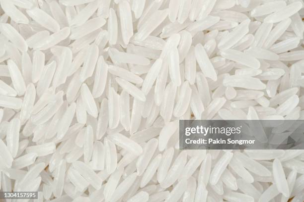

Home
Jasmine Rice

Description
Rice goes well with lentils.
Ingredients
1 cup jasmine rice
1.5 cups water
Steps
Boil the water.
Rinse the rice.
Put the rice into the water.
Simmer for 15 minutes or until the rice absorbs the water.